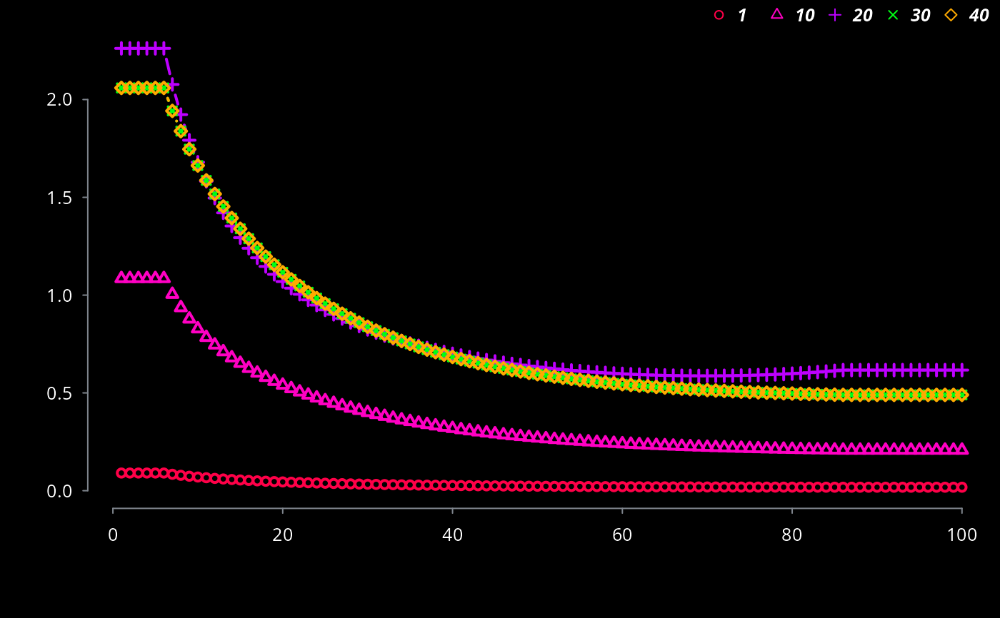

R/ef_hdv_scaled.R
ef_hdv_scaled.Rdef_hdv_scaled creates a list of scaled functions of emission factors. A scaled
emission factor which at a speed of the dricing cycle (SDC) gives a desired value.
This function needs a dataframe with local emission factors with a columns with
the name "Euro_HDV" indicating the Euro equivalence standard, assuming that there are
available local emission factors for several consecutive years.
ef_hdv_scaled(df, dfcol, SDC = 34.12, v, t, g, eu, gr = 0, l = 0.5, p)deprecated
Column of the dataframe with the local emission factors eg df$dfcol
Speed of the driving cycle
Category vehicle: "Coach", "Trucks" or "Ubus"
Sub-category of of vehicle: "3Axes", "Artic", "Midi", "RT, "Std" and "TT"
Gross weight of each category: "<=18", ">18", "<=15", ">15 & <=18", "<=7.5", ">7.5 & <=12", ">12 & <=14", ">14 & <=20", ">20 & <=26", ">26 & <=28", ">28 & <=32", ">32", ">20 & <=28", ">28 & <=34", ">34 & <=40", ">40 & <=50" or ">50 & <=60"
Euro emission standard: "PRE", "I", "II", "III", "IV" and "V"
Gradient or slope of road: -0.06, -0.04, -0.02, 0.00, 0.02. 0.04 or 0.06
Load of the vehicle: 0.0, 0.5 or 1.0
Pollutant: "CO", "FC", "NOx" or "HC"
A list of scaled emission factors g/km
The length of the list should be equal to the name of the age categories of a specific type of vehicle
{
# Do not run
CO <- ef_cetesb(p = "CO", veh = "TRUCKS_SL_D", full = TRUE)
lef <- ef_hdv_scaled(dfcol = CO$CO,
v = "Trucks",
t = "RT",
g = "<=7.5",
eu = CO$Euro_EqHDV,
gr = 0,
l = 0.5,
p = "CO")
length(lef)
ages <- c(1, 10, 20, 30, 40)
EmissionFactors(do.call("cbind",
lapply(ages, function(i) {
data.frame(i = lef[[i]](1:100))
}))) -> df
names(df) <- ages
colplot(df)
}
#> [1] 5
